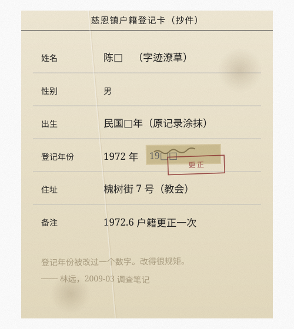
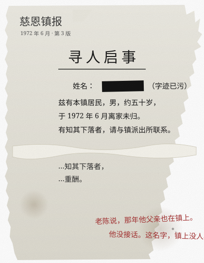
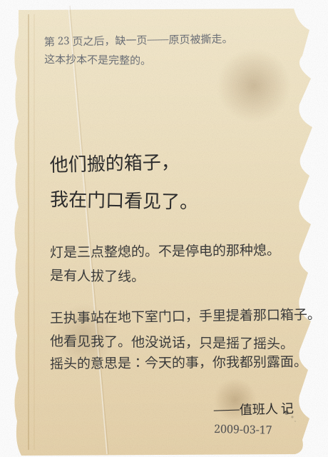
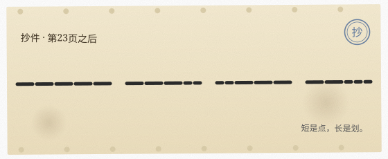

慈恩镇档案管理办公室 · 内网终端
系统版本 v1.0.2（build 2008.11）
正在启动系统……
加载卷宗索引 [==========] 100%
警告：d:\archive 部分目录损坏，已跳过
登录身份：xf001（档案修复室）
今天是 2009年3月17日 星期二
该卷已登记阅读者信息。阅读完成即登记在册。
确认将名册移交至所选对象？

扫描 d:\archive 中已删除的卷宗文件。

记录核对：3 月 14-16 日，老陈三次到访。依据抄本判断，老陈真正要从王执事处接走的，是——


生成今日值班交接记录，转发给下一位值班员。
已收录的建筑图纸（d:\archive\maps\），点击放大查看。